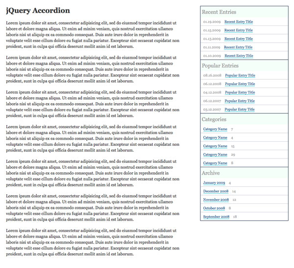

Accordions can be very useful for showing lots of different sections of data in a small amount of space. jQuery UI has a built in Accordian function, but according to the jQuery UI Build your Download, the size of the Core jQuery UI and Accordian scripts are:
That seems like a lot for just one simple accordion. Especially when you add in the normal jQuery script, which is 18kb minified and Gzipped. So instead of increasing your page load time with the extra unneeded functionality, why not create something from scratch?
I also think that writing things from scratch really gives you a much better understand of how to use jQuery effectively, without always turning to use someone else’s code.
So the plan for this tutorial is to show create an accordion using the jQuery UI function, then create one using some custom coding. Let’s use a blog sidebar as an example.
The markup is very simple, just a list item for each section in the accordion:
<ul id="accordion"> <li> <a href="#recent" class="heading">Recent Entries</a> <ul id="recent"> <li><span class="date">01.19.2009</span> <a href="#">Recent Entry Title</a></li> <li><span class="date">01.15.2009</span> <a href="#">Recent Entry Title</a></li> <li><span class="date">01.13.2009</span> <a href="#">Recent Entry Title</a></li> <li><span class="date">01.11.2009</span> <a href="#">Recent Entry Title</a></li> <li><span class="date">01.10.2009</span> <a href="#">Recent Entry Title</a></li> </ul> </li> <li> <a href="#popular" class="heading">Popular Entries</a> <ul id="popular"> <li><span class="date">08.16.2008</span> <a href="#">Popular Entry Title</a></li> <li><span class="date">06.12.2008</span> <a href="#">Popular Entry Title</a></li> <li><span class="date">04.12.2008</span> <a href="#">Popular Entry Title</a></li> <li><span class="date">06.12.2007</span> <a href="#">Popular Entry Title</a></li> <li><span class="date">03.12.2007</span> <a href="#">Popular Entry Title</a></li> </ul> </li> <li> <a href="#categories" class="heading">Categories</a> <ul id="categories"> <li><a href="#">Category Name</a> <span class="count">7</span></li> <li><a href="#">Category Name</a> <span class="count">4</span></li> <li><a href="#">Category Name</a> <span class="count">15</span></li> <li><a href="#">Category Name</a> <span class="count">29</span></li> <li><a href="#">Category Name</a> <span class="count">8</span></li> </ul> </li> <li> <a href="#archive" class="heading">Archive</a> <ul id="archive"> <li><a href="#">January 2009</a> <span class="count">4</span></li> <li><a href="#">December 2008</a> <span class="count">14</span></li> <li><a href="#">November 2008</a> <span class="count">12</span></li> <li><a href="#">October 2008</a> <span class="count">8</span></li> <li><a href="#">September 2008</a> <span class="count">18</span></li> </ul> </li> </ul>
We are going to add some very basic styling so that the accordion looks more presentable. Since this tutorial is mainly focused on the JavaScript, I am going to run through what we are doing with the CSS quickly.
Since I always start from my own simple framework stylesheet, I’m going to use it here too:
/*****Reset*****/
html, body, div, h1, h2, h3, h4, h5, h6, ul, ol, dl, li, dt, dd, p, blockquote, pre, form, fieldset, table, th, td { margin: 0; padding: 0; }
/*****Basic Definitions*****/
body { background: #fff; color: #333; font: 14px/20px Georgia, "Times New Roman", Times, serif; }
h1 { font-size: 24px; line-height: 30px; margin-bottom: 18px; }
a { }
a:visited { }
a:hover { text-decoration: none; }
img { border: none; }
p, ul, ol, dl, table { margin-bottom: 18px; }
ul, ol, dd { margin-left: 36px; }
/*****Custom Classes*****/
.clearing { clear: both; }
.clearfix { overflow: hidden; }
.last { margin-bottom: 0; }
.screenReader { left: -9999px; position: absolute; top: -9999px; }
Next, I am going to remove the margin and list-style from the accordion unordered list and the descendant lists and add a bottom border to the accordion unordered list (you will see why it is only a bottom border shortly).
ul#accordion, ul#accordion ul { list-style: none; margin: 0; }
ul#accordion { border-bottom: 1px solid #000E2E; }
Then, I am going to add a border around each accordion section, except the bottom border. Also, I am going to remove the border from list items that are descendants of the accordion section and add only a bottom border. If it is the last child of a descendant unordered list, I am going to remove the bottom border. Yes, I know this will not work in IE, but it’s not essential.
ul#accordion li { border: 1px solid #000E2E; border-bottom: none; }
ul#accordion ul li {
border: none;
border-bottom: 1px solid #C2C8D1;
color: #999;
padding: 5px 10px;
}
ul#accordion ul li:last-child { border-bottom: none; }
Next, I am going to style the main link that will toggle the accordion so that they stand out more:
ul#accordion a.heading {
background: #F4FFF9;
color: #999;
display: block;
font-size: 18px;
line-height: 18px;
padding: 10px 5px;
text-decoration: none;
}
ul#accordion a.heading:hover { background: #00B9D2; color: #fff; }
Finally, I am just going to do some basic styling on the sub lists of the accordion so that they look a little nicer:
ul#accordion li ul a { border-bottom: 1px solid #00B9D2; color: #025185; text-decoration: none; }
ul#accordion li ul a:hover { border-bottom: none; }
ul#accordion li ul .date { padding-right: 10px; }
ul#accordion li ul .count { padding-left: 10px; }
Let’s take a look at where we are so far. This is also what the accordion will look like when we are using the jQuery UI Accordion and JavaScript is disabled.
It looks like we will need to add some additional CSS for IE6 to account for the whitespace bug:
ul#accordion { float: left; width: 300px; }
ul#accordion li { float: left; width: 298px; }
ul#accordion a.heading { width: 298px; }
ul#accordion ul li { float: none; width: auto; }
Now that we’ve got all the markup and styling complete, it is very simple to implement the jQuery UI accordion. First, we just need to include jQuery and our jQuery UI script.
<script type="text/javascript" src="scripts/jquery.js"></script> <script type="text/javascript" src="scripts/jquery-ui-accordion.js"></script>
Then, we need to initialize the accordion on our unordered list with an id of accordion:
<script type="text/javascript">
$(document).ready(function() {
$('#accordion').accordion();
});
</script>
And there you have it, a working accordion.
To make the currently open accordion item stand out more, I added a little extra CSS:
ul#accordion li.ui-accordion-selected a.heading { background: #025185; color: #fff; }
The class name of ui-accordion-selected is automatically added to the current accordion section.
Now that we have done the jQuery UI accordion, it’s time to create our own. One thing that I don’t necessarily like about the jQuery UI version is the way it displays when JavaScript is disabled. I would prefer to have it so that only one section is open at a time.
To accomplish this, I am going to add in a little PHP. You could easily accomplish this with any programming language as well.
The idea behind this is that we are going to pass a variable in the URL, and if the variable coincides with each section, we assign a class of current to that section. It is much easier to see this in code, so have a look:
<?php $section = $_GET['section']; ?> <ul id="accordion"> <li<?php if($section == '' || $section == 'recent'): ?> class="current"<?php endif; ?>> <a href="?section=recent" class="heading">Recent Entries</a> <ul id="recent"> <li><span class="date">01.19.2009</span> <a href="#">Recent Entry Title</a></li> <li><span class="date">01.15.2009</span> <a href="#">Recent Entry Title</a></li> <li><span class="date">01.13.2009</span> <a href="#">Recent Entry Title</a></li> <li><span class="date">01.11.2009</span> <a href="#">Recent Entry Title</a></li> <li><span class="date">01.10.2009</span> <a href="#">Recent Entry Title</a></li> </ul> </li> <li<?php if($section == 'popular'): ?> class="current"<?php endif; ?>> <a href="?section=popular" class="heading">Popular Entries</a> <ul id="popular"> <li><span class="date">08.16.2008</span> <a href="#">Popular Entry Title</a></li> <li><span class="date">06.12.2008</span> <a href="#">Popular Entry Title</a></li> <li><span class="date">04.12.2008</span> <a href="#">Popular Entry Title</a></li> <li><span class="date">06.12.2007</span> <a href="#">Popular Entry Title</a></li> <li><span class="date">03.12.2007</span> <a href="#">Popular Entry Title</a></li> </ul> </li> <li<?php if($section == 'categories'): ?> class="current"<?php endif; ?>> <a href="?section=categories" class="heading">Categories</a> <ul id="categories"> <li><a href="#">Category Name</a> <span class="count">7</span></li> <li><a href="#">Category Name</a> <span class="count">4</span></li> <li><a href="#">Category Name</a> <span class="count">15</span></li> <li><a href="#">Category Name</a> <span class="count">29</span></li> <li><a href="#">Category Name</a> <span class="count">8</span></li> </ul> </li> <li<?php if($section == 'archive'): ?> class="current"<?php endif; ?>> <a href="?section=archive" class="heading">Archive</a> <ul id="archive"> <li><a href="#">January 2009</a> <span class="count">4</span></li> <li><a href="#">December 2008</a> <span class="count">14</span></li> <li><a href="#">November 2008</a> <span class="count">12</span></li> <li><a href="#">October 2008</a> <span class="count">8</span></li> <li><a href="#">September 2008</a> <span class="count">18</span></li> </ul> </li> </ul>
You should also notice that I changed the url of each of the links the toggle the accordion sections to match up with the if statement for the section. So basically, if JavaScript is disabled, you will be taken to a new page with that section open.
We also need to remove the jQuery UI accordion script, and include our own:
<script type="text/javascript" src="scripts/accordion.js"></script>
With this slight change to the markup, we need to add in a little additional CSS. We no longer have the ui-accordion-selected class being assigned to the list items; it is now a class of current. We also have to account for this class name change in the on state for the accordion:
ul#accordion li.current a.heading { background: #025185; color: #fff; }
So what we want to do is hide all of the unordered lists, unless they are a descendant of the list item with a class of current. I have also added a body id to this demo page so that we can use the same stylesheet for both examples.
body#customAccordion ul#accordion li ul { display: none; }
body#customAccordion ul#accordion li.current ul { display: block; }
First, we want to execute the script once the document is loaded, so we start with this:
$(document).ready(function() {
});
We want the accordion to function when the heading links are clicked, but we don’t want to leave the page so we need to make sure and return false:
$(document).ready(function() {
$('ul#accordion a.heading').click(function() {
return false;
});
});
Next, I don’t like the outline that shows up around the links when they are clicked, so I set that to none:
$(document).ready(function() {
$('ul#accordion a.heading').click(function() {
$(this).css('outline','none');
return false;
});
});
There are two different cases for this script.
This is not functionality that the jQuery UI version has, but I think a user should be able to close all sections if they want. If the link clicked has a parent that has a class of current, we want to slide up the unordered list and remove the class of current.
$(document).ready(function() {
$('ul#accordion a.heading').click(function() {
$(this).css('outline','none');
if($(this).parent().hasClass('current')) {
$(this).siblings('ul').slideUp('slow',function() {
$(this).parent().removeClass('current');
});
}
return false;
});
});
Another thing that bugs me about the jQuery UI version, is that you can scroll the accordion so it is almost out of view, click it, and then the interaction happens above what you can see. Scroll down on the jQuery UI example and give it a try.
So my solution is to use this wonderful little script called jQuery ScrollTo. It is a very small script that adds smooth page scrolling.
Let’s add that to the head of the document before our accordion script:
<script type="text/javascript" src="scripts/jquery.js"></script>
<script type="text/javascript" src="scripts/jquery-scrollTo.js"></script>
<script type="text/javascript" src="scripts/accordion.js"></script>When the section scrolls up, I want to scroll the window to the top of the accordion:
$(document).ready(function() {
$('ul#accordion a.heading').click(function() {
$(this).css('outline','none');
if($(this).parent().hasClass('current')) {
$(this).siblings('ul').slideUp('slow',function() {
$(this).parent().removeClass('current');
$.scrollTo('#accordion',1000);
});
}
return false;
});
});
The first parameter of the function is the target to scroll to, and the second is the amount of time it should take.
This case occurs when the section that is clicking is not currently open. So the first thing we want to do is hide the currently open section and remove the class of current (this piece of the code is very similar to the first case):
$(document).ready(function() {
$('ul#accordion a.heading').click(function() {
$(this).css('outline','none');
if($(this).parent().hasClass('current')) {
$(this).siblings('ul').slideUp('slow',function() {
$(this).parent().removeClass('current');
$.scrollTo('#accordion',1000);
});
} else {
$('ul#accordion li.current ul').slideUp('slow',function() {
$(this).parent().removeClass('current');
});
}
return false;
});
});
Next, we want to open the section we clicked and add the class of current:
$(document).ready(function() {
$('ul#accordion a.heading').click(function() {
$(this).css('outline','none');
if($(this).parent().hasClass('current')) {
$(this).siblings('ul').slideUp('slow',function() {
$(this).parent().removeClass('current');
$.scrollTo('#accordion',1000);
});
} else {
$('ul#accordion li.current ul').slideUp('slow',function() {
$(this).parent().removeClass('current');
});
$(this).siblings('ul').slideToggle('slow',function() {
$(this).parent().toggleClass('current');
});
}
return false;
});
});
Finally, let’s scroll the window to the top of the accordion, just like we did in the first case:
$(document).ready(function() {
$('ul#accordion a.heading').click(function() {
$(this).css('outline','none');
if($(this).parent().hasClass('current')) {
$(this).siblings('ul').slideUp('slow',function() {
$(this).parent().removeClass('current');
$.scrollTo('#accordion',1000);
});
} else {
$('ul#accordion li.current ul').slideUp('slow',function() {
$(this).parent().removeClass('current');
});
$(this).siblings('ul').slideToggle('slow',function() {
$(this).parent().toggleClass('current');
});
$.scrollTo('#accordion',1000);
}
return false;
});
});
Take a look at our custom jQuery accordion.
That’s it. Seriously. Did you think creating an accordion could be that simple?
Now, let’s compare the JavaScript file sizes using the Net tab in Firebug.
In the jQuery UI example, the JavaScript files total about 73 kb. In our custom example, with the additional scrolling of the window, the JavaScript files total about 57 kb. Now, that may not seem like much, but imagine if you have a very high traffic site. That could be a lot of bytes saved. Plus, now you understand more about jQuery.
Now go out and write your own jQuery.